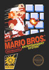

Plantilla:Efemérides - 22 de julio
De:
La Frikipedia
, la enciclopedia
extremadamente
seria.

1961
- En
Argentina
, se funda el Canal 11 de
Buenos Aires
(hoy conocido como Tenganfe).
1996
-
Bowser
vuelve a secuestrar a la princesa
Peach
, pero ahora en
3D
.
1992
- En
Colombia
,
Pablo Escobar
se fuga del Hotel de 5 estrellas, Resort & Spa conocido como La Catedral.
2009
- Un eclipse solar provoca una quema de brujas en
Cataluña
, pero solo eran
perroflautas
.
2011
- El loco de
Noruega
mata a 68
rojos
y solamente es condenado a 22 años de
prisión
.
Autor(es):
Fordus
Gñapero Solitario
Dancob
Frikipedia 2005-2016, Licencia
GFDL 1.2
- Extraído por FrikiLeaks
 De: La Frikipedia, la enciclopedia extremadamente seria. De: La Frikipedia, la enciclopedia extremadamente seria.
De: La Frikipedia, la enciclopedia extremadamente seria. De: La Frikipedia, la enciclopedia extremadamente seria.